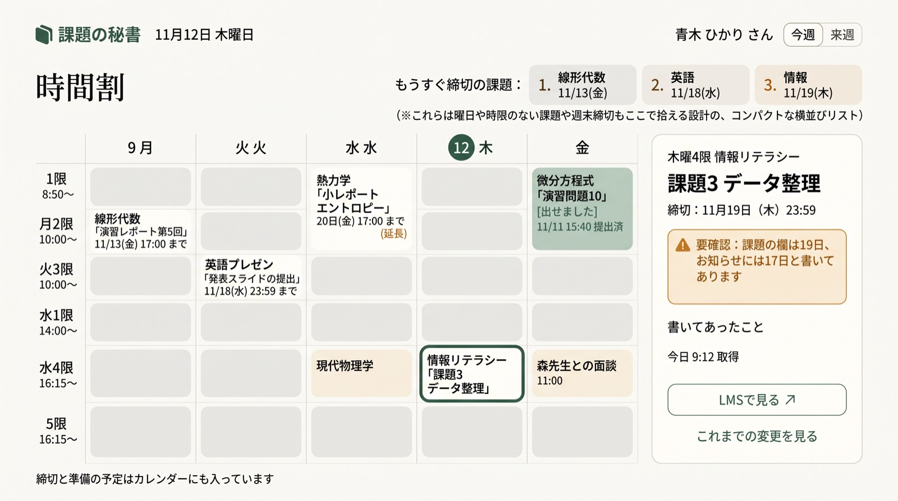
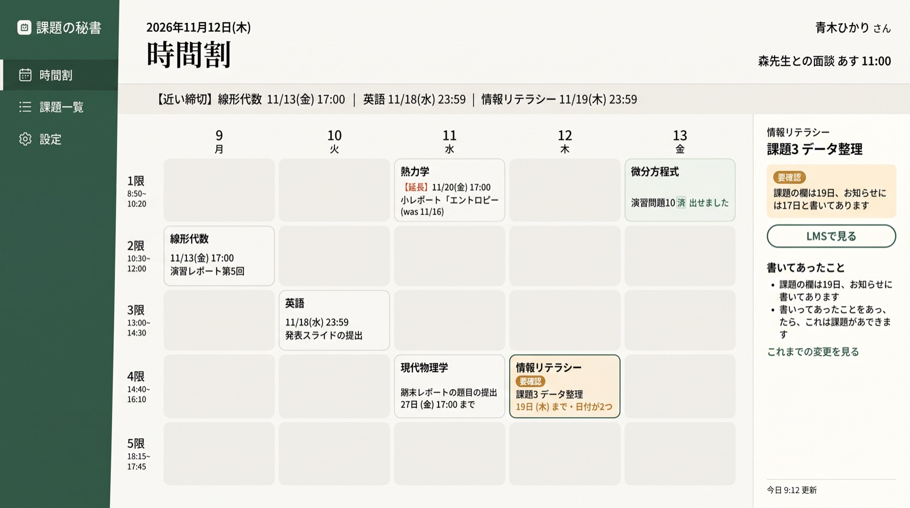
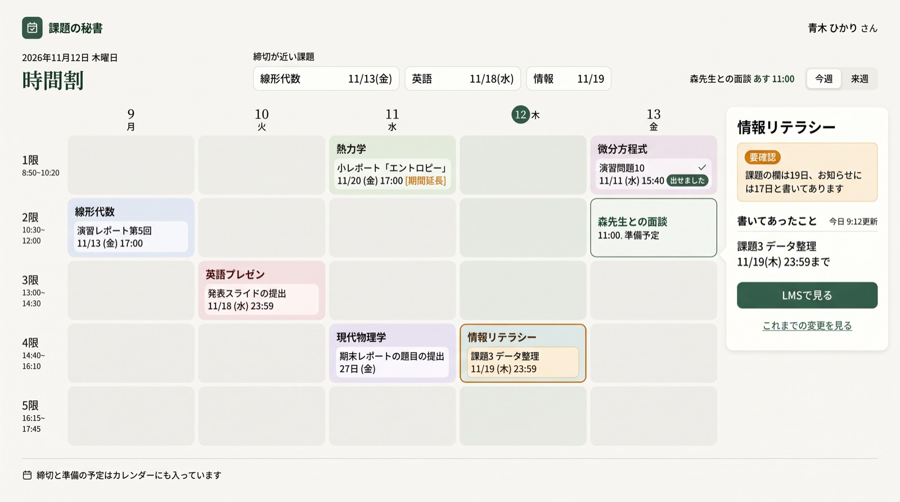
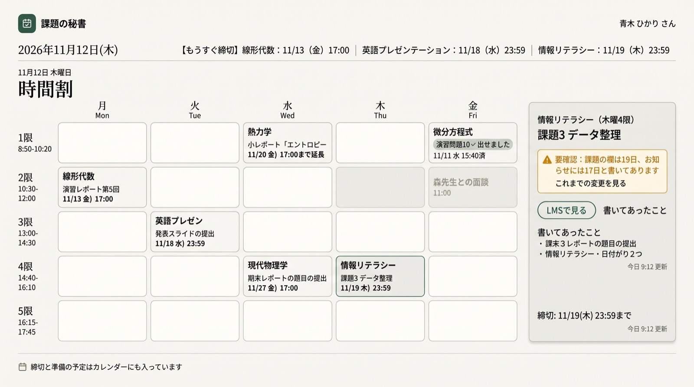
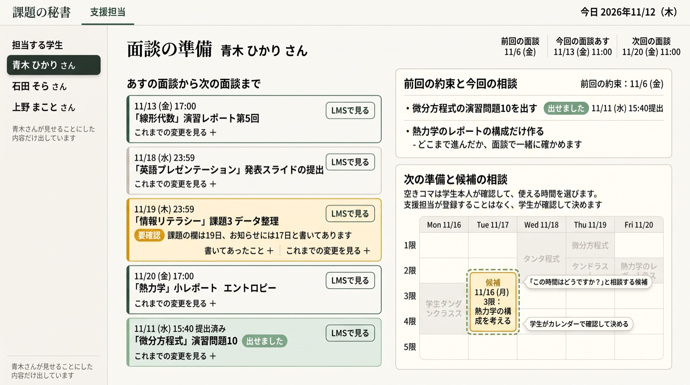
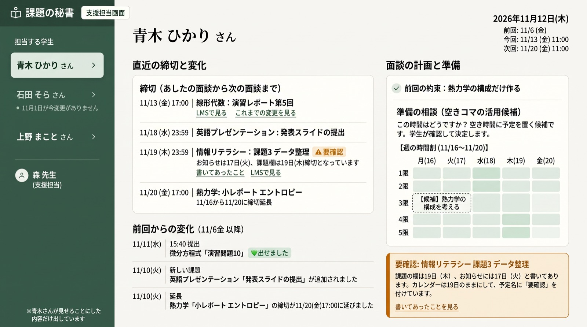
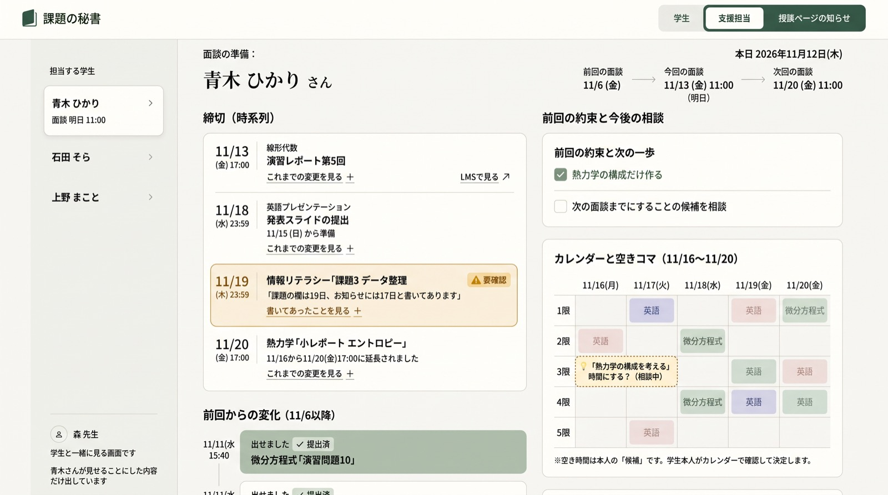
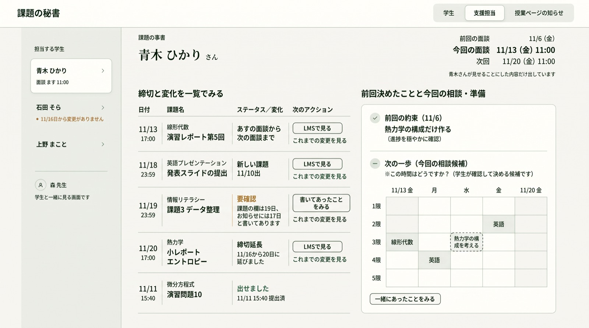

 案A · 薄い罫線余白を最も広く取り、細い線で区切る。 大きく見る（新しいタブ） · 依頼文のファイル この案の依頼文を読む用途: ui-mockup。大学生と支援担当が使う「課題の秘書」のWeb画面の見た目の提案を、完成度の高いUI画像1枚として生成してください。 出力: 横長1440px相当のPC画面、16:9。正面から見た平面の画面だけ。端末の外枠、写真、透視図、ロゴ、宣伝文、比較用の説明は入れません。 共通の方向: 深い緑 #345d4c、温かい白 #FAF9F5、白に近い面 #FFFEFA。短い見出しだけ明朝、本文・日時・操作はゴシック。罫線は薄く、余白を多く。小さすぎる文字は避けます。診療用や業務監視用のダッシュボードには見せません。 色の意味: 要確認は琥珀色で短い説明を併記。赤は今日が締切のものだけ。今回は今日締切の課題がないため赤を使いません。「出せました」は静かな緑。色だけに頼らず文字も添えます。 架空データだけを使います。今日は2026年11月12日(木)、学生は青木ひかりさん。課題は線形代数「演習レポート第5回」11/13(金)17:00、英語プレゼンテーション「発表スライドの提出」11/18(水)23:59、情報リテラシー「課題3 データ整理」課題の欄は11/19(木)23:59・お知らせは11/17(火)、熱力学「小レポート エントロピー」11/16から11/20(金)17:00に延長、微分方程式「演習問題10」は11/11(水)15:40に提出。 文言: 「締切」「要確認」「出せました」「LMSで見る」「書いてあったこと」「これまでの変更を見る」。責める言葉、すべての課題への「未提出」、0件の表示、達成率・点数・ランキング、観測ID・ログ・認証情報などの内部情報は見せません。 参考画像: 添付の画面は今回のrepo内の架空の試作です。色と文字の雰囲気を参照し、古い配置や文言をそのまま複写する必要はありません。この依頼文が優先です。 画像の用途: 配置・色・余白を選ぶため。文字は後でコードで組み直すので、日本語の完全な再現よりも情報の階層と読みやすさを重視します。 画面: 学生の時間割。 目的: 学生が次の締切を知り、どの授業の課題かを確かめられること。授業の曜日と締切の曜日を取り違えないようにします。 必ず見せるもの: 上部に締切の近い順の短い一覧(線形代数11/13、英語11/18、情報11/19)。曜日・時限のない授業や週末締切もこの一覧で拾える設計。中央の主役は月〜金×1〜5限の時間割。各マスは授業名と次の締切1つだけ。授業は月2線形代数、火3英語、水1熱力学、水4現代物理学、木4情報、金1微分方程式。授業を選ぶと右に課題の詳細が開いた状態を描く。選択は情報リテラシー。琥珀色の「要確認」と「課題の欄は19日、お知らせには17日と書いてあります」を添える。「LMSで見る」への入口。確定した準備の予定があれば時間割に静かに表示。 補助: 最近の変化は短く。提出できたものだけ「出せました」。今日9:12時点など更新時刻と書いてあったことは詳細側に置く。 見せないもの: 課題の全件一覧、全履歴、管理用の数値カード、大きな操作ボタン群、常設の警告欄。時間割の上の締切一覧が大きくなりすぎないこと。準備候補は確定した予定と混ぜない。 この案の方向(A): 最も余白の多い案。横長の短い締切リスト、細い罫線、ほぼ影なし、白と生成りの差で領域を分ける。見出しは左揃え。 他の案との違いは見た目だけにし、必須の情報や本人の決定権は変えません。
 案B · 緑のナビゲーション左の細い深緑の帯で、見る場所を示す。 大きく見る（新しいタブ） · 依頼文のファイル この案の依頼文を読む用途: ui-mockup。大学生と支援担当が使う「課題の秘書」のWeb画面の見た目の提案を、完成度の高いUI画像1枚として生成してください。 出力: 横長1440px相当のPC画面、16:9。正面から見た平面の画面だけ。端末の外枠、写真、透視図、ロゴ、宣伝文、比較用の説明は入れません。 共通の方向: 深い緑 #345d4c、温かい白 #FAF9F5、白に近い面 #FFFEFA。短い見出しだけ明朝、本文・日時・操作はゴシック。罫線は薄く、余白を多く。小さすぎる文字は避けます。診療用や業務監視用のダッシュボードには見せません。 色の意味: 要確認は琥珀色で短い説明を併記。赤は今日が締切のものだけ。今回は今日締切の課題がないため赤を使いません。「出せました」は静かな緑。色だけに頼らず文字も添えます。 架空データだけを使います。今日は2026年11月12日(木)、学生は青木ひかりさん。課題は線形代数「演習レポート第5回」11/13(金)17:00、英語プレゼンテーション「発表スライドの提出」11/18(水)23:59、情報リテラシー「課題3 データ整理」課題の欄は11/19(木)23:59・お知らせは11/17(火)、熱力学「小レポート エントロピー」11/16から11/20(金)17:00に延長、微分方程式「演習問題10」は11/11(水)15:40に提出。 文言: 「締切」「要確認」「出せました」「LMSで見る」「書いてあったこと」「これまでの変更を見る」。責める言葉、すべての課題への「未提出」、0件の表示、達成率・点数・ランキング、観測ID・ログ・認証情報などの内部情報は見せません。 参考画像: 添付の画面は今回のrepo内の架空の試作です。色と文字の雰囲気を参照し、古い配置や文言をそのまま複写する必要はありません。この依頼文が優先です。 画像の用途: 配置・色・余白を選ぶため。文字は後でコードで組み直すので、日本語の完全な再現よりも情報の階層と読みやすさを重視します。 画面: 学生の時間割。 目的: 学生が次の締切を知り、どの授業の課題かを確かめられること。授業の曜日と締切の曜日を取り違えないようにします。 必ず見せるもの: 上部に締切の近い順の短い一覧(線形代数11/13、英語11/18、情報11/19)。曜日・時限のない授業や週末締切もこの一覧で拾える設計。中央の主役は月〜金×1〜5限の時間割。各マスは授業名と次の締切1つだけ。授業は月2線形代数、火3英語、水1熱力学、水4現代物理学、木4情報、金1微分方程式。授業を選ぶと右に課題の詳細が開いた状態を描く。選択は情報リテラシー。琥珀色の「要確認」と「課題の欄は19日、お知らせには17日と書いてあります」を添える。「LMSで見る」への入口。確定した準備の予定があれば時間割に静かに表示。 補助: 最近の変化は短く。提出できたものだけ「出せました」。今日9:12時点など更新時刻と書いてあったことは詳細側に置く。 見せないもの: 課題の全件一覧、全履歴、管理用の数値カード、大きな操作ボタン群、常設の警告欄。時間割の上の締切一覧が大きくなりすぎないこと。準備候補は確定した予定と混ぜない。 この案の方向(B): 深緑の細い左ナビゲーションと白い本文の案。深緑の面は小さく保ち、時間割のマスは薄い緑と白。次に見る場所の順が分かる配置。 他の案との違いは見た目だけにし、必須の情報や本人の決定権は変えません。
 案C · 紙の手帳生成りの背景と白い面を重ねる。 大きく見る（新しいタブ） · 依頼文のファイル この案の依頼文を読む用途: ui-mockup。大学生と支援担当が使う「課題の秘書」のWeb画面の見た目の提案を、完成度の高いUI画像1枚として生成してください。 出力: 横長1440px相当のPC画面、16:9。正面から見た平面の画面だけ。端末の外枠、写真、透視図、ロゴ、宣伝文、比較用の説明は入れません。 共通の方向: 深い緑 #345d4c、温かい白 #FAF9F5、白に近い面 #FFFEFA。短い見出しだけ明朝、本文・日時・操作はゴシック。罫線は薄く、余白を多く。小さすぎる文字は避けます。診療用や業務監視用のダッシュボードには見せません。 色の意味: 要確認は琥珀色で短い説明を併記。赤は今日が締切のものだけ。今回は今日締切の課題がないため赤を使いません。「出せました」は静かな緑。色だけに頼らず文字も添えます。 架空データだけを使います。今日は2026年11月12日(木)、学生は青木ひかりさん。課題は線形代数「演習レポート第5回」11/13(金)17:00、英語プレゼンテーション「発表スライドの提出」11/18(水)23:59、情報リテラシー「課題3 データ整理」課題の欄は11/19(木)23:59・お知らせは11/17(火)、熱力学「小レポート エントロピー」11/16から11/20(金)17:00に延長、微分方程式「演習問題10」は11/11(水)15:40に提出。 文言: 「締切」「要確認」「出せました」「LMSで見る」「書いてあったこと」「これまでの変更を見る」。責める言葉、すべての課題への「未提出」、0件の表示、達成率・点数・ランキング、観測ID・ログ・認証情報などの内部情報は見せません。 参考画像: 添付の画面は今回のrepo内の架空の試作です。色と文字の雰囲気を参照し、古い配置や文言をそのまま複写する必要はありません。この依頼文が優先です。 画像の用途: 配置・色・余白を選ぶため。文字は後でコードで組み直すので、日本語の完全な再現よりも情報の階層と読みやすさを重視します。 画面: 学生の時間割。 目的: 学生が次の締切を知り、どの授業の課題かを確かめられること。授業の曜日と締切の曜日を取り違えないようにします。 必ず見せるもの: 上部に締切の近い順の短い一覧(線形代数11/13、英語11/18、情報11/19)。曜日・時限のない授業や週末締切もこの一覧で拾える設計。中央の主役は月〜金×1〜5限の時間割。各マスは授業名と次の締切1つだけ。授業は月2線形代数、火3英語、水1熱力学、水4現代物理学、木4情報、金1微分方程式。授業を選ぶと右に課題の詳細が開いた状態を描く。選択は情報リテラシー。琥珀色の「要確認」と「課題の欄は19日、お知らせには17日と書いてあります」を添える。「LMSで見る」への入口。確定した準備の予定があれば時間割に静かに表示。 補助: 最近の変化は短く。提出できたものだけ「出せました」。今日9:12時点など更新時刻と書いてあったことは詳細側に置く。 見せないもの: 課題の全件一覧、全履歴、管理用の数値カード、大きな操作ボタン群、常設の警告欄。時間割の上の締切一覧が大きくなりすぎないこと。準備候補は確定した予定と混ぜない。 この案の方向(C): 温かい紙の手帳を思わせる案。生成りの背景に小さく丸めた白い領域、細い緑のアクセント。影はごく薄く、時間と課題名に十分な間隔。装飾の紙や写真は置かない。 他の案との違いは見た目だけにし、必須の情報や本人の決定権は変えません。
 案D · 整った一覧日付と行の位置をそろえて見比べる。 大きく見る（新しいタブ） · 依頼文のファイル この案の依頼文を読む用途: ui-mockup。大学生と支援担当が使う「課題の秘書」のWeb画面の見た目の提案を、完成度の高いUI画像1枚として生成してください。 出力: 横長1440px相当のPC画面、16:9。正面から見た平面の画面だけ。端末の外枠、写真、透視図、ロゴ、宣伝文、比較用の説明は入れません。 共通の方向: 深い緑 #345d4c、温かい白 #FAF9F5、白に近い面 #FFFEFA。短い見出しだけ明朝、本文・日時・操作はゴシック。罫線は薄く、余白を多く。小さすぎる文字は避けます。診療用や業務監視用のダッシュボードには見せません。 色の意味: 要確認は琥珀色で短い説明を併記。赤は今日が締切のものだけ。今回は今日締切の課題がないため赤を使いません。「出せました」は静かな緑。色だけに頼らず文字も添えます。 架空データだけを使います。今日は2026年11月12日(木)、学生は青木ひかりさん。課題は線形代数「演習レポート第5回」11/13(金)17:00、英語プレゼンテーション「発表スライドの提出」11/18(水)23:59、情報リテラシー「課題3 データ整理」課題の欄は11/19(木)23:59・お知らせは11/17(火)、熱力学「小レポート エントロピー」11/16から11/20(金)17:00に延長、微分方程式「演習問題10」は11/11(水)15:40に提出。 文言: 「締切」「要確認」「出せました」「LMSで見る」「書いてあったこと」「これまでの変更を見る」。責める言葉、すべての課題への「未提出」、0件の表示、達成率・点数・ランキング、観測ID・ログ・認証情報などの内部情報は見せません。 参考画像: 添付の画面は今回のrepo内の架空の試作です。色と文字の雰囲気を参照し、古い配置や文言をそのまま複写する必要はありません。この依頼文が優先です。 画像の用途: 配置・色・余白を選ぶため。文字は後でコードで組み直すので、日本語の完全な再現よりも情報の階層と読みやすさを重視します。 画面: 学生の時間割。 目的: 学生が次の締切を知り、どの授業の課題かを確かめられること。授業の曜日と締切の曜日を取り違えないようにします。 必ず見せるもの: 上部に締切の近い順の短い一覧(線形代数11/13、英語11/18、情報11/19)。曜日・時限のない授業や週末締切もこの一覧で拾える設計。中央の主役は月〜金×1〜5限の時間割。各マスは授業名と次の締切1つだけ。授業は月2線形代数、火3英語、水1熱力学、水4現代物理学、木4情報、金1微分方程式。授業を選ぶと右に課題の詳細が開いた状態を描く。選択は情報リテラシー。琥珀色の「要確認」と「課題の欄は19日、お知らせには17日と書いてあります」を添える。「LMSで見る」への入口。確定した準備の予定があれば時間割に静かに表示。 補助: 最近の変化は短く。提出できたものだけ「出せました」。今日9:12時点など更新時刻と書いてあったことは詳細側に置く。 見せないもの: 課題の全件一覧、全履歴、管理用の数値カード、大きな操作ボタン群、常設の警告欄。時間割の上の締切一覧が大きくなりすぎないこと。準備候補は確定した予定と混ぜない。 この案の方向(D): 余白を保ちながら日付の縦位置と行をきれいにそろえる案。締切や変化を行で見比べられる。見出しにだけ明朝、背景は温かい白、淡い緑の区切り。カードの乱立を避ける。 他の案との違いは見た目だけにし、必須の情報や本人の決定権は変えません。
 案A · 薄い罫線余白を最も広く取り、細い線で区切る。 大きく見る（新しいタブ） · 依頼文のファイル この案の依頼文を読む用途: ui-mockup。大学生と支援担当が使う「課題の秘書」のWeb画面の見た目の提案を、完成度の高いUI画像1枚として生成してください。 出力: 横長1440px相当のPC画面、16:9。正面から見た平面の画面だけ。端末の外枠、写真、透視図、ロゴ、宣伝文、比較用の説明は入れません。 共通の方向: 深い緑 #345d4c、温かい白 #FAF9F5、白に近い面 #FFFEFA。短い見出しだけ明朝、本文・日時・操作はゴシック。罫線は薄く、余白を多く。小さすぎる文字は避けます。診療用や業務監視用のダッシュボードには見せません。 色の意味: 要確認は琥珀色で短い説明を併記。赤は今日が締切のものだけ。今回は今日締切の課題がないため赤を使いません。「出せました」は静かな緑。色だけに頼らず文字も添えます。 架空データだけを使います。今日は2026年11月12日(木)、学生は青木ひかりさん。課題は線形代数「演習レポート第5回」11/13(金)17:00、英語プレゼンテーション「発表スライドの提出」11/18(水)23:59、情報リテラシー「課題3 データ整理」課題の欄は11/19(木)23:59・お知らせは11/17(火)、熱力学「小レポート エントロピー」11/16から11/20(金)17:00に延長、微分方程式「演習問題10」は11/11(水)15:40に提出。 文言: 「締切」「要確認」「出せました」「LMSで見る」「書いてあったこと」「これまでの変更を見る」。責める言葉、すべての課題への「未提出」、0件の表示、達成率・点数・ランキング、観測ID・ログ・認証情報などの内部情報は見せません。 参考画像: 添付の画面は今回のrepo内の架空の試作です。色と文字の雰囲気を参照し、古い配置や文言をそのまま複写する必要はありません。この依頼文が優先です。 画像の用途: 配置・色・余白を選ぶため。文字は後でコードで組み直すので、日本語の完全な再現よりも情報の階層と読みやすさを重視します。 画面: 支援担当の面談画面。 目的: 面談の最初の1分で次の締切・前回からの変化・要確認をつかみ、学生と準備の候補を相談できること。 必ず見せるもの: 青木ひかりさん、前回の面談11/6(金)、今回の面談11/13(金)11:00、次回11/20(金)11:00。次の面談までの締切を時系列に短く、前回からの変化(新しい課題・締切延長・提出)、琥珀色の要確認と「課題の欄は19日、お知らせには17日と書いてあります」、前回の約束「熱力学の構成だけ作る」、次の一歩。授業と空きコマの時間割を置き、11/16(月)3限に熱力学の構成を考える候補を点線で表示する。候補と確定した予定の見た目を区別。 共有: 「青木さんが見せることにした内容だけ出しています」を小さく。担当する架空の学生の一覧は控えめに。許可前のデータは見せない。 準備の決め方: 空きコマは本人が使える時間と断定しない。「この時間はどうですか」と相談する候補。支援担当が勝手にカレンダーへ入れる操作は描かない。「学生が確認して決める」の案内まで。学生本人が決めたこととカレンダーに入ったことを同じ成功状態にしない。 押したときだけ: 書いてあったこと、これまでの変更、LMSで見る。問題があるときだけ更新停止のお知らせ。 見せないもの: 受け持ち外の学生、診断・私的な面談記録、内部ログ、0件の警告、達成率、学生を責める評価。 この案の方向(A): 最も余白の多い案。横長の短い締切リスト、細い罫線、ほぼ影なし、白と生成りの差で領域を分ける。見出しは左揃え。 他の案との違いは見た目だけにし、必須の情報や本人の決定権は変えません。
 案B · 緑のナビゲーション左の細い深緑の帯で、見る場所を示す。 大きく見る（新しいタブ） · 依頼文のファイル この案の依頼文を読む用途: ui-mockup。大学生と支援担当が使う「課題の秘書」のWeb画面の見た目の提案を、完成度の高いUI画像1枚として生成してください。 出力: 横長1440px相当のPC画面、16:9。正面から見た平面の画面だけ。端末の外枠、写真、透視図、ロゴ、宣伝文、比較用の説明は入れません。 共通の方向: 深い緑 #345d4c、温かい白 #FAF9F5、白に近い面 #FFFEFA。短い見出しだけ明朝、本文・日時・操作はゴシック。罫線は薄く、余白を多く。小さすぎる文字は避けます。診療用や業務監視用のダッシュボードには見せません。 色の意味: 要確認は琥珀色で短い説明を併記。赤は今日が締切のものだけ。今回は今日締切の課題がないため赤を使いません。「出せました」は静かな緑。色だけに頼らず文字も添えます。 架空データだけを使います。今日は2026年11月12日(木)、学生は青木ひかりさん。課題は線形代数「演習レポート第5回」11/13(金)17:00、英語プレゼンテーション「発表スライドの提出」11/18(水)23:59、情報リテラシー「課題3 データ整理」課題の欄は11/19(木)23:59・お知らせは11/17(火)、熱力学「小レポート エントロピー」11/16から11/20(金)17:00に延長、微分方程式「演習問題10」は11/11(水)15:40に提出。 文言: 「締切」「要確認」「出せました」「LMSで見る」「書いてあったこと」「これまでの変更を見る」。責める言葉、すべての課題への「未提出」、0件の表示、達成率・点数・ランキング、観測ID・ログ・認証情報などの内部情報は見せません。 参考画像: 添付の画面は今回のrepo内の架空の試作です。色と文字の雰囲気を参照し、古い配置や文言をそのまま複写する必要はありません。この依頼文が優先です。 画像の用途: 配置・色・余白を選ぶため。文字は後でコードで組み直すので、日本語の完全な再現よりも情報の階層と読みやすさを重視します。 画面: 支援担当の面談画面。 目的: 面談の最初の1分で次の締切・前回からの変化・要確認をつかみ、学生と準備の候補を相談できること。 必ず見せるもの: 青木ひかりさん、前回の面談11/6(金)、今回の面談11/13(金)11:00、次回11/20(金)11:00。次の面談までの締切を時系列に短く、前回からの変化(新しい課題・締切延長・提出)、琥珀色の要確認と「課題の欄は19日、お知らせには17日と書いてあります」、前回の約束「熱力学の構成だけ作る」、次の一歩。授業と空きコマの時間割を置き、11/16(月)3限に熱力学の構成を考える候補を点線で表示する。候補と確定した予定の見た目を区別。 共有: 「青木さんが見せることにした内容だけ出しています」を小さく。担当する架空の学生の一覧は控えめに。許可前のデータは見せない。 準備の決め方: 空きコマは本人が使える時間と断定しない。「この時間はどうですか」と相談する候補。支援担当が勝手にカレンダーへ入れる操作は描かない。「学生が確認して決める」の案内まで。学生本人が決めたこととカレンダーに入ったことを同じ成功状態にしない。 押したときだけ: 書いてあったこと、これまでの変更、LMSで見る。問題があるときだけ更新停止のお知らせ。 見せないもの: 受け持ち外の学生、診断・私的な面談記録、内部ログ、0件の警告、達成率、学生を責める評価。 この案の方向(B): 深緑の細い左ナビゲーションと白い本文の案。深緑の面は小さく保ち、時間割のマスは薄い緑と白。次に見る場所の順が分かる配置。 他の案との違いは見た目だけにし、必須の情報や本人の決定権は変えません。
 案C · 紙の手帳生成りの背景と白い面を重ねる。 大きく見る（新しいタブ） · 依頼文のファイル この案の依頼文を読む用途: ui-mockup。大学生と支援担当が使う「課題の秘書」のWeb画面の見た目の提案を、完成度の高いUI画像1枚として生成してください。 出力: 横長1440px相当のPC画面、16:9。正面から見た平面の画面だけ。端末の外枠、写真、透視図、ロゴ、宣伝文、比較用の説明は入れません。 共通の方向: 深い緑 #345d4c、温かい白 #FAF9F5、白に近い面 #FFFEFA。短い見出しだけ明朝、本文・日時・操作はゴシック。罫線は薄く、余白を多く。小さすぎる文字は避けます。診療用や業務監視用のダッシュボードには見せません。 色の意味: 要確認は琥珀色で短い説明を併記。赤は今日が締切のものだけ。今回は今日締切の課題がないため赤を使いません。「出せました」は静かな緑。色だけに頼らず文字も添えます。 架空データだけを使います。今日は2026年11月12日(木)、学生は青木ひかりさん。課題は線形代数「演習レポート第5回」11/13(金)17:00、英語プレゼンテーション「発表スライドの提出」11/18(水)23:59、情報リテラシー「課題3 データ整理」課題の欄は11/19(木)23:59・お知らせは11/17(火)、熱力学「小レポート エントロピー」11/16から11/20(金)17:00に延長、微分方程式「演習問題10」は11/11(水)15:40に提出。 文言: 「締切」「要確認」「出せました」「LMSで見る」「書いてあったこと」「これまでの変更を見る」。責める言葉、すべての課題への「未提出」、0件の表示、達成率・点数・ランキング、観測ID・ログ・認証情報などの内部情報は見せません。 参考画像: 添付の画面は今回のrepo内の架空の試作です。色と文字の雰囲気を参照し、古い配置や文言をそのまま複写する必要はありません。この依頼文が優先です。 画像の用途: 配置・色・余白を選ぶため。文字は後でコードで組み直すので、日本語の完全な再現よりも情報の階層と読みやすさを重視します。 画面: 支援担当の面談画面。 目的: 面談の最初の1分で次の締切・前回からの変化・要確認をつかみ、学生と準備の候補を相談できること。 必ず見せるもの: 青木ひかりさん、前回の面談11/6(金)、今回の面談11/13(金)11:00、次回11/20(金)11:00。次の面談までの締切を時系列に短く、前回からの変化(新しい課題・締切延長・提出)、琥珀色の要確認と「課題の欄は19日、お知らせには17日と書いてあります」、前回の約束「熱力学の構成だけ作る」、次の一歩。授業と空きコマの時間割を置き、11/16(月)3限に熱力学の構成を考える候補を点線で表示する。候補と確定した予定の見た目を区別。 共有: 「青木さんが見せることにした内容だけ出しています」を小さく。担当する架空の学生の一覧は控えめに。許可前のデータは見せない。 準備の決め方: 空きコマは本人が使える時間と断定しない。「この時間はどうですか」と相談する候補。支援担当が勝手にカレンダーへ入れる操作は描かない。「学生が確認して決める」の案内まで。学生本人が決めたこととカレンダーに入ったことを同じ成功状態にしない。 押したときだけ: 書いてあったこと、これまでの変更、LMSで見る。問題があるときだけ更新停止のお知らせ。 見せないもの: 受け持ち外の学生、診断・私的な面談記録、内部ログ、0件の警告、達成率、学生を責める評価。 この案の方向(C): 温かい紙の手帳を思わせる案。生成りの背景に小さく丸めた白い領域、細い緑のアクセント。影はごく薄く、時間と課題名に十分な間隔。装飾の紙や写真は置かない。 他の案との違いは見た目だけにし、必須の情報や本人の決定権は変えません。
 案D · 整った一覧日付と行の位置をそろえて見比べる。 大きく見る（新しいタブ） · 依頼文のファイル この案の依頼文を読む用途: ui-mockup。大学生と支援担当が使う「課題の秘書」のWeb画面の見た目の提案を、完成度の高いUI画像1枚として生成してください。 出力: 横長1440px相当のPC画面、16:9。正面から見た平面の画面だけ。端末の外枠、写真、透視図、ロゴ、宣伝文、比較用の説明は入れません。 共通の方向: 深い緑 #345d4c、温かい白 #FAF9F5、白に近い面 #FFFEFA。短い見出しだけ明朝、本文・日時・操作はゴシック。罫線は薄く、余白を多く。小さすぎる文字は避けます。診療用や業務監視用のダッシュボードには見せません。 色の意味: 要確認は琥珀色で短い説明を併記。赤は今日が締切のものだけ。今回は今日締切の課題がないため赤を使いません。「出せました」は静かな緑。色だけに頼らず文字も添えます。 架空データだけを使います。今日は2026年11月12日(木)、学生は青木ひかりさん。課題は線形代数「演習レポート第5回」11/13(金)17:00、英語プレゼンテーション「発表スライドの提出」11/18(水)23:59、情報リテラシー「課題3 データ整理」課題の欄は11/19(木)23:59・お知らせは11/17(火)、熱力学「小レポート エントロピー」11/16から11/20(金)17:00に延長、微分方程式「演習問題10」は11/11(水)15:40に提出。 文言: 「締切」「要確認」「出せました」「LMSで見る」「書いてあったこと」「これまでの変更を見る」。責める言葉、すべての課題への「未提出」、0件の表示、達成率・点数・ランキング、観測ID・ログ・認証情報などの内部情報は見せません。 参考画像: 添付の画面は今回のrepo内の架空の試作です。色と文字の雰囲気を参照し、古い配置や文言をそのまま複写する必要はありません。この依頼文が優先です。 画像の用途: 配置・色・余白を選ぶため。文字は後でコードで組み直すので、日本語の完全な再現よりも情報の階層と読みやすさを重視します。 画面: 支援担当の面談画面。 目的: 面談の最初の1分で次の締切・前回からの変化・要確認をつかみ、学生と準備の候補を相談できること。 必ず見せるもの: 青木ひかりさん、前回の面談11/6(金)、今回の面談11/13(金)11:00、次回11/20(金)11:00。次の面談までの締切を時系列に短く、前回からの変化(新しい課題・締切延長・提出)、琥珀色の要確認と「課題の欄は19日、お知らせには17日と書いてあります」、前回の約束「熱力学の構成だけ作る」、次の一歩。授業と空きコマの時間割を置き、11/16(月)3限に熱力学の構成を考える候補を点線で表示する。候補と確定した予定の見た目を区別。 共有: 「青木さんが見せることにした内容だけ出しています」を小さく。担当する架空の学生の一覧は控えめに。許可前のデータは見せない。 準備の決め方: 空きコマは本人が使える時間と断定しない。「この時間はどうですか」と相談する候補。支援担当が勝手にカレンダーへ入れる操作は描かない。「学生が確認して決める」の案内まで。学生本人が決めたこととカレンダーに入ったことを同じ成功状態にしない。 押したときだけ: 書いてあったこと、これまでの変更、LMSで見る。問題があるときだけ更新停止のお知らせ。 見せないもの: 受け持ち外の学生、診断・私的な面談記録、内部ログ、0件の警告、達成率、学生を責める評価。 この案の方向(D): 余白を保ちながら日付の縦位置と行をきれいにそろえる案。締切や変化を行で見比べられる。見出しにだけ明朝、背景は温かい白、淡い緑の区切り。カードの乱立を避ける。 他の案との違いは見た目だけにし、必須の情報や本人の決定権は変えません。